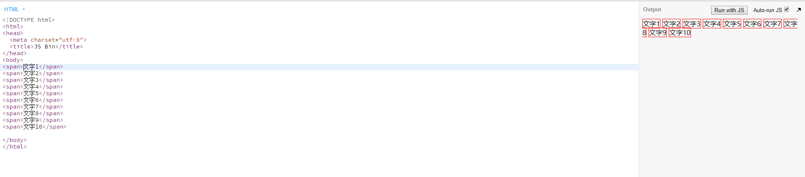
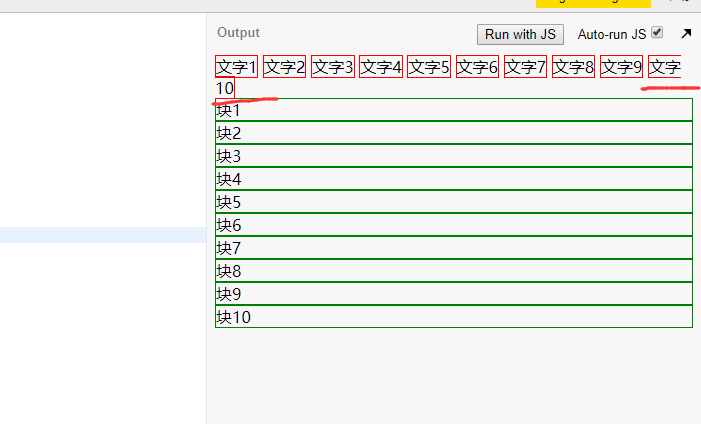

css布局与定位_files/90a8300d-5cf4-46b7-8dd0-c4e23d5496aa.png)
如上所示为背景图;
可以看一下这个网站请求了哪些图片;
可以看一看具体是哪个；
就是这个图;
可以先下载下来;
file--->open folder:
寻找新的 壁纸:
加上图片;
发现没有效果;
border大法:
发现其高度为0:
可以加些高度:
div高度是由其内部文档流元素的高度 总和决定的;
文档流:文档内元素的流动方向；
8'59";
再按一下tab键:
加上10个border：
感觉有一条河流从左往右流动:
如果流动遇到阻碍,那么就换行流:

div：
按tab：
给div一个边框:
此时是从上往下流动;
内联元素从左 往右流动,如果遇到宽度不够,从左往右继续流;如果是块级元素,每个块占一行,所有的块从上往下依次往下流;
如果一个span有border,如果在流动过程中被截断了;border不会出现两个,还是一个(出现了头在上面,脚在下面);

1.span有一种特殊的现象:
haaaa....它不会换行；
在西方 人的思维里面,haaaa....它是一个整体;不像我们中国 人,把他拆开来看;
要想分割,加上下面一个属性即可:
2.div是可以缩短的:
为什么块1后面还有这么多空间就是不给块2用？因为文档流就是这么规定的;
而内联元素(他们有一个属性叫Inline)是一个挨着一个的,中间有空隙是因为有回车；
3.如何让块1和块2在一行？
给块1一个float left，给块2一个float left;而后给块1和块2的爸爸一个clearfix即可；
还有一个快捷方式:
按一下tab：
display: inline-block;display: inline-block;这个属性也可以实现块2和块1在一行;(但是这个一般不用,会有bug)
一个元素的高度是由什么决定的,是由其内部文档流元素高度决定的;
比如说body这个元素高度是多少:由它里面文档流元素高度决定的;
此时啥也没有：那么body的高度即为0；
css布局与定位_files/ad7c550e-2c70-4f74-b4c8-481cd3b76581.png)
加个边框即可看见:
如果写了一个1,那么body的高度就有1所决定；
块级元素的高度由什么决定？是由其内部文档流元素的高度 总和决定的
现在body的高度是由 span和div所决定的 ;
第一个span的最上面,和最后一个div的最下面;这个中间相聚的距离就是body高度;
文档流:
内联元素:从左往右流动;
块级元素:从上往下流动，每个块级元素另起一行
块级元素的高度：是由内部文档流元素高度的总和决定的(不是相等);
那么内联元素的高度是由什么决定的呢?(此问题可能是css里面最难的了)
写abcd的时候需要用四线普
所有的字他都有一个基线，一般来说,对齐的是基线,不是中线;
建议行高是为了让 两行之间有空隙；
下面这个100px它到底指的是什么?
实际上指的是最高的一个字母的最上面和最低的字母的最下面
即:字体里面最高的一点距离里面最低的一点的大小;
有没有g我都是这么高;
你好 这两个字只有92px左右,没有100px;
why红色的span的高度比字体的高度还要高呢,因为有一个建议行高的东西！
发现这两个不同的字体的像素是不一样的,一个是140px，一个是120px;
因为上面这个字体的建议高度是1.4倍;
下面这个字体的建议高度是1.21倍;
34’左右
除了字体以外,还有一个建议行高;建议行高如果不写,浏览器就会取一个默认的;
div的第一个 span的高度是140px;
第二个span的高度是121px;
那么这个div的高度是多少?（140px）
块级元素的高度由内部文档流元素的高度决定的;
内联元素的高度是和字体以及设计师设计的相关参数决定的;
一旦涉及到内联元素,高度是不可控的,
这里行高为100px;其实div的高度还是130左右;（如果想要其高度100px,需要你强行加一个heiht:100px；但是一般不这么做;）
只要line-height大于font-size即可;
css布局与定位_files/23fa36a4-aa11-4731-8a46-824674e07c38.png)